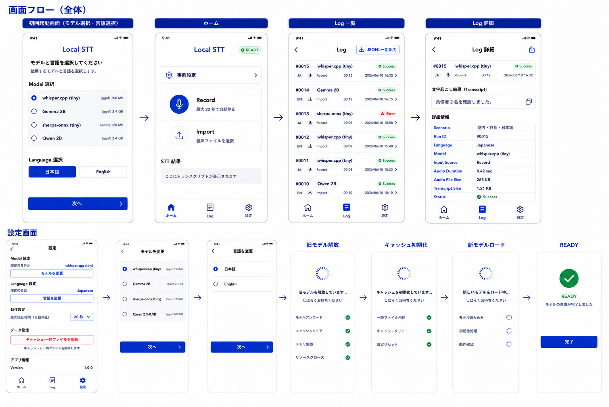

防災向け完全ローカルSTTシステム
スパイラル１設計書
完全オフラインの音声認識（Speech-to-Text）プロトタイプ検証アプリの設計仕様。
Flutter + Dart FFI + C++推論エンジンによるクロスプラットフォーム（Android / iOS）実装と、テスト・評価計画を網羅する。
🎯 検証範囲・対象OS
防災向け完全オフラインSTTの技術検証（Android / iOSでのOS間フェア比較）。なお、今回は日本語と英語のみを対象とし、タイ語は対象外とする。
🤖 検証モデル
gemma / whisper.cpp / sherpa-onnx / qwen
📑 目次（スコープと検証範囲）
- 1. UI画面構成 — 状態確認やログ取得に特化したミニマル設計
- 2. システムフロー — アプリ起動時のモデルロード、リアルタイム処理を見据えた推論時間計測
- 3. 技術スタック — Flutter, Dart FFI, C++推論エンジン
- 4. ログスキーマ — 一括ダウンロード可能なJSONL形式データ
- 5. テスト計画 — スパイラル1必須項目に絞り込んだテスト（1週間想定）
📱 1. UI画面構成

図1: local sttアプリ UIモックアップ — ホーム画面 / ログ一覧・詳細 / 設定画面 / 画面遷移
🔄 2. システムフロー（処理の流れ）

図2: システム全体の処理フロー — 基本情報・システム構成・テスト評価の3層構造
1
アプリ起動と初期設定（Settings）
アプリ初回起動時、または設定画面にてSTTモデルと言語を選択し、モデルをロードする。都度の切り替えミスを防ぐため、**ロード完了後に不要なキャッシュを削除し、テスト中は状態を固定する**。
- STTモデル選択: gemma / whisper.cpp（Tiny系）/ sherpa-onnx（日本語/英語）/ qwen
- Language選択: 音声認識エンジンに渡す言語（Japanese / English）
- 動作設定: 最大録音時間（自動停止）の指定（例：20秒）
- ※ 設定変更時は必ず再ロードを行い、常に同じモデル品質で出力できるようにする。
2
ホーム画面（Home）での準備と音声入力
シナリオ等の必要な情報が揃っているか確認し、過不足がなければ録音可能になる。
✅ 事前準備
- Scenario等の情報を入力
- 情報不足時は UNREADY
- 準備完了で READY になり録音可能に
🎤 音声入力
- Record: 最大20秒（設定値）で自動停止、または手動停止で完了
- Import: 外部ファイル読み込み（png等の非音声ファイルはエラーとして弾く）
3
STT推論と結果表示
選択されたSTTエンジンで推論を実行し、テキストを画面に出力する。
4
ログの管理と出力（Log）
実行結果は自動保存され、ログ画面から一覧（履歴）および詳細を確認できる。SuccessかErrorのみを扱う。
- 一覧画面: 各Runのステータスを表示。
- 詳細画面: 特定のログをタップし、該当データや音声/テキストファイルを個別に出力できる。
- 一括エクスポート: PCでの分析用に、全ログデータをJSONL形式で一括出力できる。
🔧 3. 技術スタック（アーキテクチャ詳細）
本システムを構成する5つのコア技術要素。それぞれが果たす役割を整理する。
🦋 Flutter — UI & アプリケーション基盤
AndroidとiOSの両方で全く同じ画面（マイク入力、音声ファイル選択、結果表示、ログ保存）を構築するクロスプラットフォームフレームワーク。
🔗 Dart FFI — 連携ブリッジ
Flutterで作った画面（Dart）とC++で書かれたAIエンジンは言語が違い、そのままでは会話できない。この「通訳」として間に立ち、お互いのデータを直接やり取りするパイプ役。
⚡ 一律 INT4 / INT8 量子化
AIモデルのファイルサイズとRAM使用量を劇的に削減し、ミドルレンジスマホやメモリの厳しいiPhoneでもOOMせず安定稼働させる。あわせて特許回避もクリア。
🎵 PCM 解凍 — 音声前処理
マイクから入った音声や受け取ったオーディオデータを、一度余計な圧縮のない素の音声データ（PCM）にデコード。STTエンジンの入力仕様に合わせてサンプリングレートやチャンネルを調整する。
📊 RAM計測（優先度低）
※ 本フェーズでは文字起こしと推論速度を優先し、RAM計測は取得可能な範囲で構わない（最悪なくても可）。
可能であれば、C++側の別スレッドでピークRAM使用量をログに記録する。
可能であれば、C++側の別スレッドでピークRAM使用量をログに記録する。
💾 4. ログスキーマ（JSONL形式）
各Runの実行結果をJSONL形式で1行1レコードとして保存する。以下は実際の保存例。
Run Log（1 Run = 1レコード）
{
"run_id": 15,
"test_id": "V-014",
"timestamp_start": "2026-08-24T12:30:02+09:00",
"timestamp_end": "2026-08-24T12:30:14+09:00",
"scenario": "屋外・道路沿い",
"language": "ja",
"notes": "車の走行音あり",
"device_name": "iPhone",
"device_model": "iPhone 15 Pro",
"os": "iOS",
"os_version": "18.x",
"app_version": "0.1.0",
"candidate": "whisper.cpp",
"model_name": "whisper-tiny",
"runtime": "whisper.cpp",
"quantization": "INT8",
"model_size_mb": 75.0,
"model_load_time_ms": 310,
"is_cached": true,
"input_source": "record",
"audio_file": "run_0015.wav",
"audio_duration_sec": 8.42,
"audio_file_size_kb": 265.4,
"channels": 1,
"transcript": "負傷者二名を確認しました",
"transcript_size_bytes": 42,
"inference_time_ms": 1030,
"status": "success",
"error_code": null,
"error_message": null,
"log_save_status": "success"
}
Event Log（UIステート遷移の記録）
{"event_id":101, "event_type":"recording_started", "ui_state":"RECORDING"}
{"event_id":102, "event_type":"recording_manual_stop", "ui_state":"SAVING_AUDIO"}
{"event_id":103, "event_type":"audio_save_success", "ui_state":"TRANSCRIBING"}
{"event_id":104, "event_type":"transcription_started", "ui_state":"TRANSCRIBING"}
{"event_id":105, "event_type":"transcription_finished", "ui_state":"DISPLAYING_RESULT"}
{"event_id":106, "event_type":"transcript_displayed", "ui_state":"DONE"}
{"event_id":107, "event_type":"log_save_success", "ui_state":"DONE"}
🧪 5. テスト計画（Spiral 1 Test Items）
1週間での実装完了を目指し、必須機能に絞り込んだテスト計画。Functional / Log / Error / Evaluation を中心に検証する。
App Startup & Transition — アプリ起動と状態遷移
| ID | テスト項目 | 期待結果 |
|---|---|---|
| AT-001 | アプリが開けるか | 正常に起動できること |
| AT-002 | アプリが想定している遷移通りに動けるか | 画面間の遷移が仕様通りに行われること |
Initial Load & Setup — 初期ロードと設定
| ID | テスト項目 | 期待結果 |
|---|---|---|
| IL-001 | モデルを正確に読み込めるか・選択できるか | 他のモデルと間違えず正確に選択・ロードできること |
| IL-002 | STT用のLanguageを設定できるか | UI言語ではなくSTT用の言語として正しく設定されること |
| IL-003 | モデル・言語を読み込んでからホームに行けるか | 前回のモデルが残らないよう、ロード完了後にホームへ遷移すること |
| IL-004 | すべてロードが終わってから開始を押せるか | 準備完了(READY)状態になってから操作可能になること |
Home Screen — ホーム画面の機能
| ID | テスト項目 | 期待結果 |
|---|---|---|
| HS-001 | 詳細情報や事前設定ページに遷移できるか | ボタンタップで各画面へ遷移できること |
| HS-002 | 録音ボタンと自動停止機能 | マイク録音が開始でき、設定時間（20秒等）に達した場合は自動で停止すること |
| HS-003 | 音声ファイルの読み込みができるか | 音声ファイルが正常にインポートできること |
| HS-004 | 壊れているファイル（png等）のエラーハンドリング | 読み込めない旨を表示し、ログにも記録すること |
| HS-005 | Ready状態の制御 | 情報が揃った状態でのみrecordが押せ、不足時はunreadyと分かること |
STT Result — STT実行結果
| ID | テスト項目 | 期待結果 |
|---|---|---|
| SR-001 | STT結果が文字として出力されているか | 推論結果が画面上に正しくテキスト表示されること |
| SR-002 | Inference Time（推論時間）の取得・表示 | 推論にかかった純粋な時間（Inference Time）が、結果画面およびログに確実に出力されること |
Log Functions — ログ機能（一覧・詳細）
| ID | テスト項目 | 期待結果 |
|---|---|---|
| LG-001 | ログ一覧のステータス表示 | interruptedは不要とし、successとerrorのみ表示されること |
| LG-002 | ログ詳細ページへの遷移 | 一覧からボタンタップで詳細画面へ遷移できること |
| LG-003 | JSONLの一括出力 | PCでの解析用に全ログをJSONLで一括出力できること |
| LG-004 | ログ詳細の項目確認 | 必要なログ情報がすべて詳細画面に含まれていること |
| LG-005 | 単一ログの個別出力 | ログ詳細画面からそのログのみを出力できること |
| LG-006 | 音声・テキストファイルの出力 | 詳細画面から関連する音声ファイルとテキストファイルが出力できること |
Settings — 設定機能
| ID | テスト項目 | 期待結果 |
|---|---|---|
| ST-001 | モデル・言語・動作設定の変更 | 設定画面から正確に変更でき、録音時間制限等が反映されること |
| ST-002 | キャッシュ削除 | キャッシュ削除ボタンで確実にキャッシュが削除できること |
| ST-003 | 変更後のモデル品質の安定性 | 変更後に前のキャッシュが残らず、最初でも最後でも同じモデル品質が保たれること |
Critical Requirements — プロジェクト必須要件（クリティカル）
| ID | テスト項目 | 期待結果 |
|---|---|---|
| CR-001 | 完全オフライン動作検証（機内モード） | ネットワークを完全に遮断した状態でも、STT推論が正常に完了すること（防災向けローカルSTTの絶対要件） |
📋 バージョン履歴
v2.0.0
2026-08-25
【仕様変更 (v2.0.0 全面改訂)】
- 開発手法の変更: アジャイル開発への移行に伴い、各種仕様を見直し。
- UI・システムフローの刷新: 新しい画面構成（Settings / Home / Log）に基づき処理フローを4段階に再定義。画像も最新のモックアップ・フロー図へ差し替え。
- モデルの追加: 検証対象モデルとして新たに
qwenを追加。 - テスト計画の再編: 従来の機能・異常系などの分類を廃止し、画面遷移・ユーザーストーリーに沿った6カテゴリに再編。「完全オフライン動作検証」をクリティカル要件として明記。
- 録音仕様の変更: UIの設計に合わせ、「最大20秒での自動停止」または「手動停止」へ仕様変更。
- ログスキーマの最適化:
test_category,sample_rate_hz,ram_peak_mb等の不要項目を削除し、品質検証用のis_cachedフラグを追加。
v1.1.0
2026-08-25
【レビュー対応】
1週間の実装スコープに向け、不要なテスト項目や中断処理を削除。モデル起動時ロードへの変更、Inference Timeの重視、目次の追加などを反映。
1週間の実装スコープに向け、不要なテスト項目や中断処理を削除。モデル起動時ロードへの変更、Inference Timeの重視、目次の追加などを反映。
v1.0.0
2026-08-24
【初版作成】
document-over.txt、Spiral1_STT_Test_Items_100.md、quantization_patent_research.md の3ドキュメントを統合し、設計書として体系化。
document-over.txt、Spiral1_STT_Test_Items_100.md、quantization_patent_research.md の3ドキュメントを統合し、設計書として体系化。